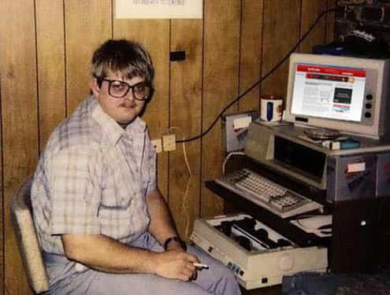
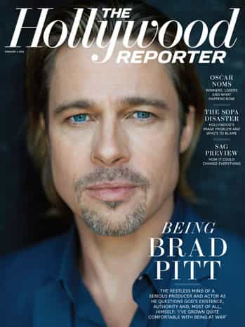
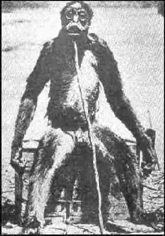

The Dude is a location-independent freelance writer based in Eastern Canada.


Online dating. The arena of fat chicks and single moms, of duckface and angle shots, of shattered dreams and lost hope. It’s the place you turn to when you’ve exhausted all other options and fear your balls will explode if you don’t get laid this week. Despite its increased popularity, online dating still hasn’t totally shaken off its reputation as the sexual equivalent of a used car lot, a place where quality isn’t the best and nothing is exactly as advertised.
The disadvantages of online dating for men are well known: the quality of the girls is usually below average, the contact-to-response ratio is abysmally bad, and a lot of the time you’ll find girls using pictures of themselves from their younger and much thinner past.
At the same time, many men are recognizing that online dating comes with a unique set of advantages as well. Compared to hitting bars and clubs, online dating is very inexpensive, relatively anonymous, and extremely efficient. For men in high stress jobs, or guys who just don’t like gaming in public, online dating could be the ideal way to meet girls.
But it’s not for everyone. For every guy who can thrive with online dating, there’s another who is probably better off sticking to the clubs or the coffee shop scene. With that in mind, the following are the six types of guys who most commonly use online dating, starting with the ones who are most likely to find success with it compared to other methods.
The Dungeons And Dragons Guy is your typical nerd who is scared to leave the house. In other words, a man who suffers from asperger’s or severe social anxiety. Online dating is very effective for this guy in a relative sense: when gaming in real life, he will get nothing (if he’s not good looking); but when gaming online, he will merely get very little. Though he will run into trouble as his interactions move from the laptop to the coffee shop and force him out of his warlock den, online dating at least gives him a chance.

The sweatshop worker guy can be identified by his tendency to work more than 60 hours a week. Usually found in professions like law and investment banking, he has all the advantages of money and education, but suffers from one crippling flaw: his thirst to earn an annual bonus or “make partner” leaves him a de-facto slave of his bosses and keeps him from having an active social life. For sweatshop worker guy, online dating offers a way of meeting women that doesn’t interfere with his more important corporate ladder climbing duties.
The Brad Pitt lookalike is simply a man who is so good looking, women take notice. In game, looks matter, and in online game, they matter even more. All the Brad Pitt lookalike needs to do is throw up a few pics and spam girls with lewd messages, and he’ll have a bang by the end of the week.

But of course, just as online dating’s advantages make it ideal for certain types of men, its disadvantages also make it one of the worst ways to meet women for men who are prone to falling into one of the three categories below.
The international player is what most of this blog’s readers are or aspire to be: a man who travels the world in search of lays, often hoping to escape the skrillex haircuts and high testosterone of western womandom. Theoretically, an international player shouldn’t have trouble with online dating; after all, dating sites are plenty popular in just about every country. The real problem is this: foreign country game usually requires knowing a bit of the local language, and writing in a foreign language is significantly harder than simply speaking it. This is less of a problem in Asian countries where the women will gladly switch to English, but in much of Russia and Latin America there is a kind of national pride tied up in the language, which means you’ll likely need it to succeed at online dating there if you can’t write in the local language.
The guy aiming high is exactly what he sounds like: a man who only wants to bang 8s and above. The reason he is less likely to succeed with online dating is simply because really hot girls on dating sites get so much spam, his messages are not likely to get noticed. The brutal truth is that most men who try online dating will have to settle for 6s and below. However, if The Guy Aiming High is also a Brad Pitt lookalike, he may get a little further.
The opposite of the Brad Pitt lookalike: a man who has been so badly beaten with an ugly stick, he causes children to have nightmares and vaginas to become dryer than fresh sawdust. The reason this man has very little luck with online dating is simple: looks matter much more online than in real life. The brutal reality is that game just doesn’t work as well over a computer screen, for three reasons:
Game might make or break an average looking guy online, but for the sasquatches of the world, it’s pretty much hopeless.

Of course, there are many men who try to get laid online who do not fall into any of the categories above. The above are merely the 6 types of guys most likely to succeed or fail to an extreme degree when meeting women online. Other online dating archetypes, such as the pedophile and the dick pics guy, are another subject altogether.
Read Next: Internet Dating Killed My Game